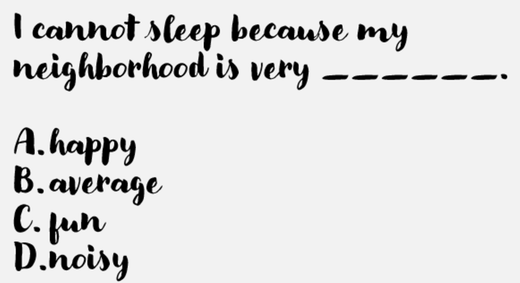
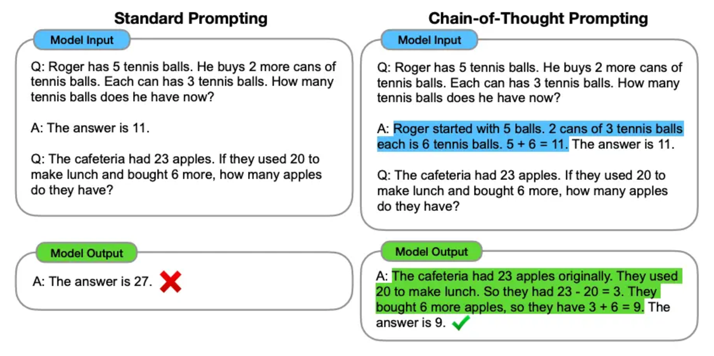

Prompt Engineering#
Part 1#
LLMs#
Large Language Models are supervised models
The objective is to predict the next word in a sentence

Generating text#
In order to generate new text, the model needs a starting point
Provide some initial text for the LLM to complete
We call this a prompt
How prompts work#
First, a little game 😄#
Prompt structure#
A typical LLM prompt structure consists of the following messages:
System message:
Unique, applies to all instructions on the model
Is defined only once based on our requirements
User message:
Has the question that needs to be answered
Expecting a new message each time we run inference
(Optional) Assistant message:
Includes the expected response from the LLM
Usually used for training/fine-tuning models only
Prompt Elements#
A prompt contains any of the following elements:
Instruction - a specific task or instruction you want the model to perform
Context - external information or additional context that can steer the model to better responses
Input Data - the input or question that we are interested to find a response for
Output Indicator - the type or format of the output.
Example:
Classify the text into neutral, negative, or positive
Text: I think the food was okay.
Sentiment:
Prompt Templates#
Zero-shot Prompting#
Prompt:
Classify the text into neutral, negative or positive.
Text: I think the vacation is okay.
Sentiment:
Output:
Neutral
Few-shot Prompting#
Prompt:
Classify the text into neutral, negative or positive.
Follow these examples:
Example 1:
Text: I think the movie is very bad
Sentiment: Negative
Example 2:
Text: Today was a good day!
Sentiment: Positive
Example 3:
Text: Today we learnt about Machine Learning
Sentiment: Neutral
Now classify the following text:
Text: I think the vacation is okay.
Sentiment:
Output:
Neutral
Chain-of-Thought (CoT) Prompting#
